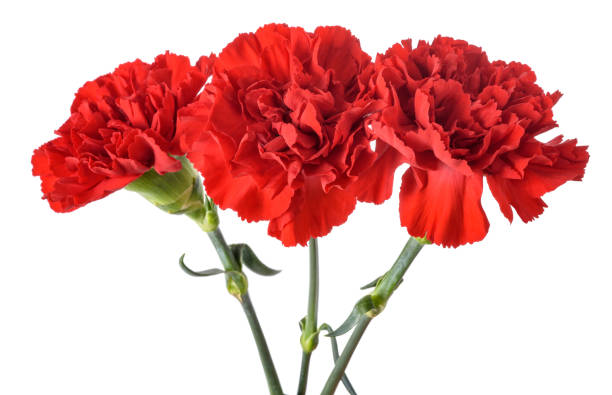
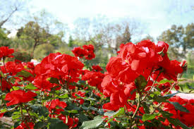

Spain
National Flower — Red Carnation
Fiery, passionate, and deeply rooted in tradition, the red carnation is the soul of Spain in flower form. From the hands of flamenco dancers to the lapels of festival-goers, the carnation has been woven into Spanish life for centuries. It is a flower that speaks of love, pride, and the vibrant spirit of the Spanish people.


The Carnation and Spanish Culture
In Spain, the red carnation is far more than a garden flower — it is a cultural icon. Known as clavel in Spanish, it has appeared in flamenco performances for generations, tucked into the hair of dancers as they move across the stage. In Andalusia, the southern region of Spain famous for its festivals and passion, carnations decorate balconies, patios, and public spaces in brilliant bursts of red. The flower is also deeply tied to Spanish religious traditions, often used in processions and offerings during festivals. In the early 20th century, the red carnation became a symbol of solidarity and workers' rights across Spain, giving it a powerful political meaning alongside its beauty.
Why the Red Carnation is Spain's National Flower
The red carnation was chosen as Spain's national flower because of its deep presence in Spanish culture, art, and daily life. No other flower appears as frequently in Spanish music, dance, painting, and poetry. It represents the qualities that Spain is known for — warmth, passion, resilience, and pride. The carnation thrives in the Mediterranean climate of Spain, blooming abundantly under the hot sun, making it a natural symbol of the land itself. Its bold red color mirrors the red in the Spanish flag, further cementing its place as a national emblem.
Quick Facts
| Feature | Details |
|---|---|
| Scientific Name | Dianthus caryophyllus |
| Common Colors | Red, pink, white, yellow, purple |
| Blooming Season | Spring to summer (April – July) |
| Symbol of | Passion, pride, love, solidarity |
| Cultural Connection | Flamenco, Andalusian festivals |
How to Care for a Carnation
- Plant in well-drained, slightly alkaline soil in a sunny location
- Water moderately — carnations prefer drier conditions over soggy soil
- Deadhead spent flowers regularly to encourage continuous blooming
- Fertilize every 6–8 weeks with a balanced fertilizer during the growing season
- Stake taller varieties to keep them upright, especially in windy areas
- Cut back stems by one third after the first flush of blooms to promote a second flowering
Watch a Carnation Bloom
Watch the ruffled petals of a carnation slowly open in this beautiful time-lapse:
▶ Watch: Carnation Blooming Time-Lapse